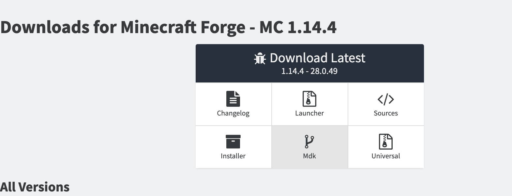
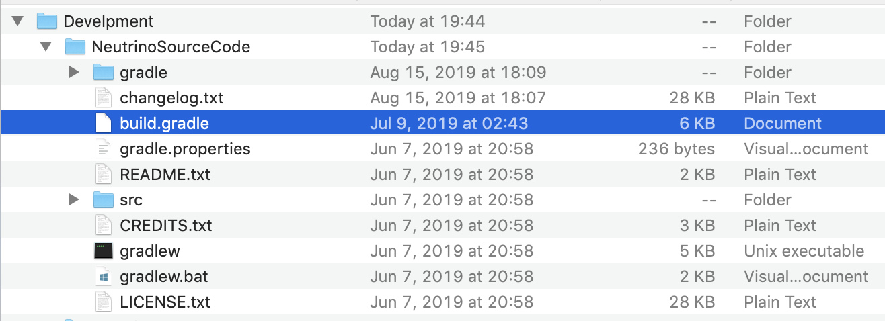
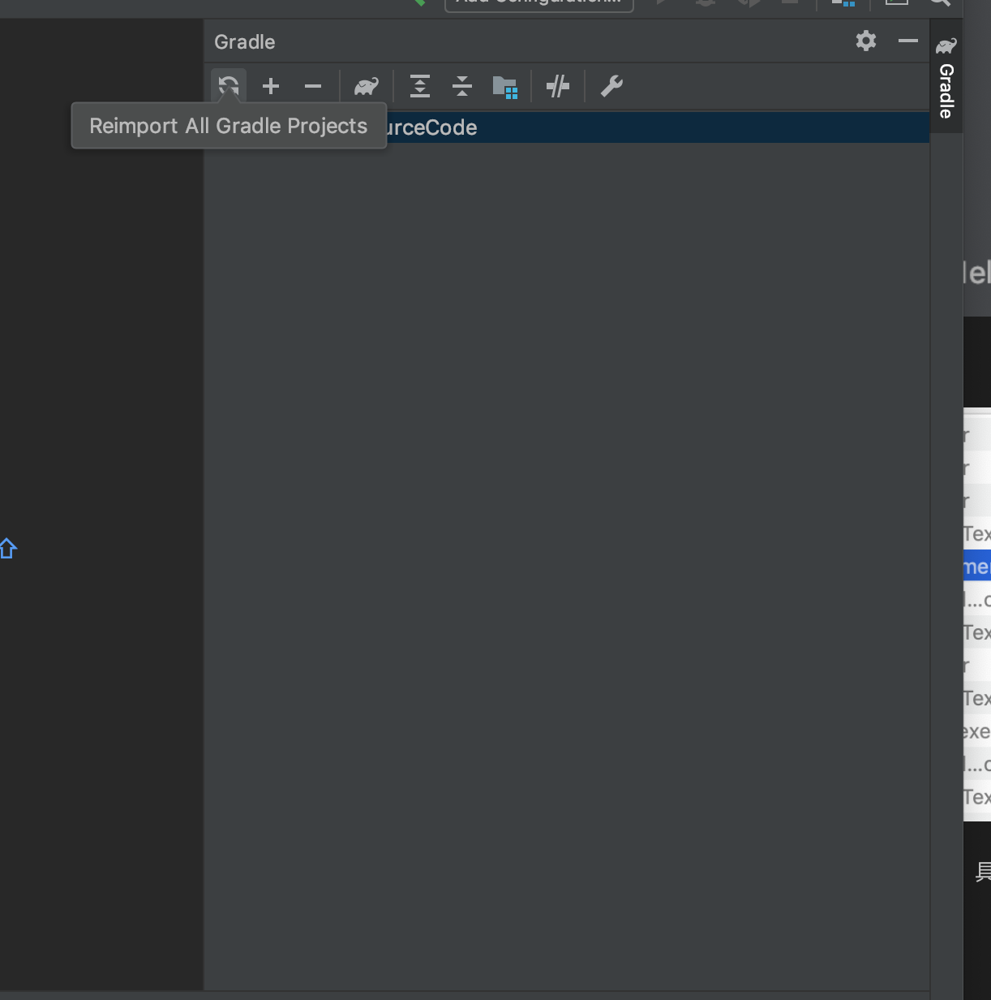
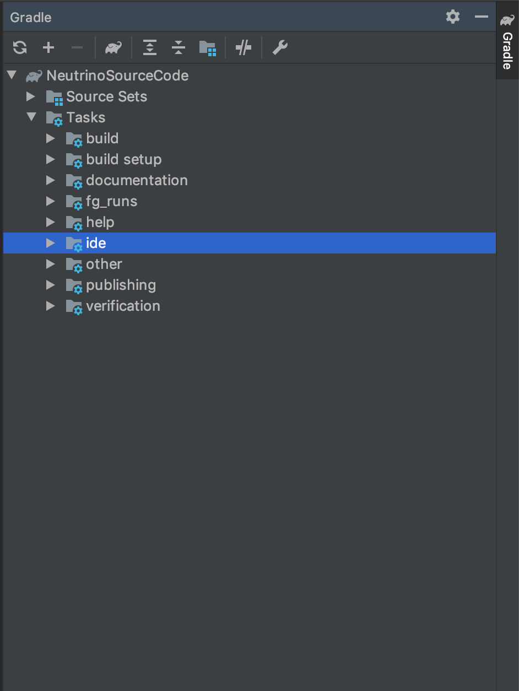
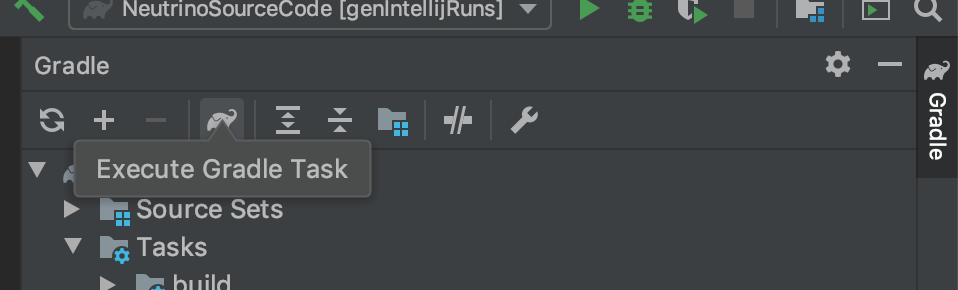
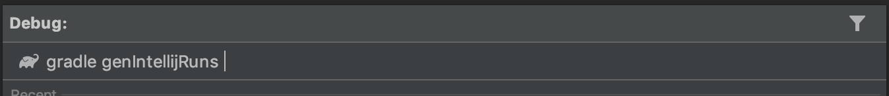
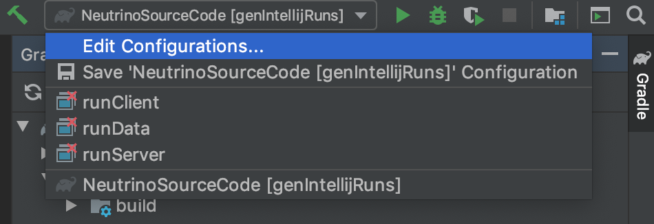
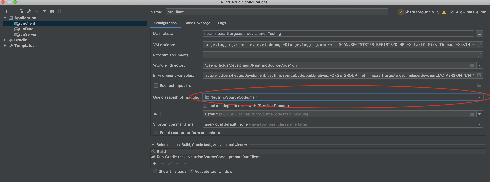
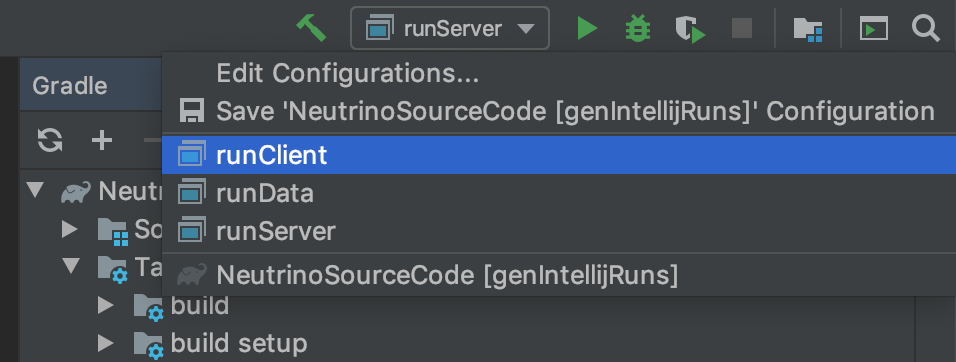

本教程假定读者已有 Java 编程经验，所以在教程中不会对一些编程术语进行过多对介绍。
本教程针对的是 Minecraft 1.13/ 1.14 开发，对之前和之后对 Minecraft 版本仅有有限的参考意义。
我们在进行 mod 开发对第一步是配置开发环境，我们将会用到以下工具及其软件
JDK 1.8
Forge MDK
Intellij IDEA
一个合适的代理
请注意笔者不欢迎任何对盗版行为，如果你无力承担授权费用请使用 Community 版本
请不要安装任何形式对汉化包，如果你无法理解 Inellij 的界面请提升英文水平之后再学习
因为，本文假定读者已经有 Java 编程经验，所以对 JDK 和 Intellij 的安装过程略去不提。
下面开始讲解具体的环境配置
首先先在官网，下载 Forge 的 MDK （Mod Development Kit）。 
下载完成之后，解压完目录结构如下
├── CREDITS.txt
├── LICENSE.txt
├── README.txt
├── build.gradle
├── changelog.txt
├── gradle
│ └── wrapper
│ ├── gradle-wrapper.jar
│ └── gradle-wrapper.properties
├── gradle.properties
├── gradlew
├── gradlew.bat
└── src
└── main
├── java
│ └── com
│ └── example
│ └── examplemod
│ └── ExampleMod.java
└── resources
├── META-INF
│ └── mods.toml
└── pack.mcmeta
接着用 Intellij 导入项目
注意这里请选择 build.gradle 。

接着请耐心等待，因为网络的原因导入过程会持续很久，如果出现问题可以尝试给 gralde 配置代理。
请将:
org.gradle.jvmargs=-DsocksProxyHost=127.0.0.1 -DsocksProxyPort=你代理软件的socks本地端口
添加进 gradle.properties 文件中。
如果导入出现错误，点击右侧 gradle 面板的「循环」按钮即可重新导入。

当右侧 gradle 面板出现以下内容时候即代表导入完毕。

出于兼容性的问题，面板中似乎会找不到 genIntellijRuns 这项 task，所以我们得手动调用。
点击「大象」按钮 
输入 genIntellijRuns

成功执行以后，Run 面板里应有如下内容 
点击 Edit COnfiguratiosn 按钮，修改 Application中的所有子项的 Use classpath of Module。

修改完毕之后，应该没有红叉显示。
这时点击 Run 面板的 runClinet 即可启动 Minecraft 客户端。
